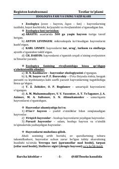

7BBiologiya fanidan qisqacha qoʻllanma va testlar toʻplami.
Ushbu qoʻllanmada zoologiya fani, hayvonlar olamining xilma-xilligi, ularning tuzilishi va hayot kechirishi haqida qisqacha va tushunarli ma'lumotlar berilgan. Shuningdek, ovqat hazm qilish sistemasi va boshqa biologik mavzular testlar va qoidalar shaklida bayon etilgan.